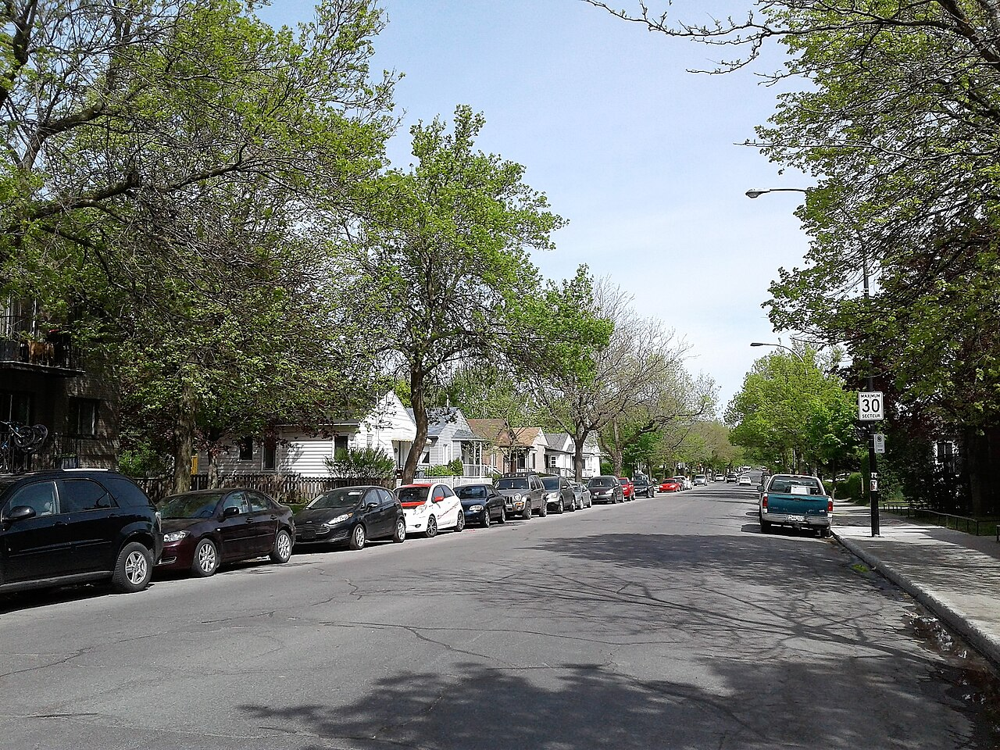

Veterans' house La maison de vétérans

7056 rue Beaulieu, Côte-Saint-Paul — a veterans' house on the street the study names as one of the type's concentrations, four doors from its own example at 7034. Photograph by Jeangagnon, 11 April 2020, Wikimedia Commons, CC BY-SA 4.0. https://commons.wikimedia.org/wiki/File:7056_rue_Beaulieu.jpg — licence, author and file URL read through the Commons API before download.

Boulevard Monk, Ville-Émard — the row of veterans' houses the study cites as the borough's clearest concentration of the type (unité 3.10). Photograph by Jeangagnon, 19 May 2018, Wikimedia Commons, CC BY-SA 4.0, from Category:Maisons de vétérans. https://commons.wikimedia.org/wiki/File:Boulevard_Monk_-_003.jpg — licence, author and file URL read through the Commons API before download.
The one type in the borough that arrived from Ottawa rather than from a Montréal builder. Wartime Housing Limited, created by the federal government, drew economical, quickly built models for the workers in the munitions plants; they were meant to be dismantled after the war and instead spread through the outer quarters. One storey, low pitch, a door between two windows of unequal width, and — after seventy years — a façade that may carry brick, sheet metal and artificial stone at once.
The same object as the wartime housing this site catalogues at Lévis, at Arvida and in Verdun's voisinage Crawford, and the reason the canonical id is shared. What the Sud-Ouest fiche adds is the ordinary end of the story: not a prize-winning NHA neighbourhood but a few streets in Côte-Saint-Paul where the standard plan was dropped into an existing grid.
| Tenure / plan | single-family |
|---|---|
| Storeys | 1 |
| Roof form | gabled-or-hipped |
| Roof pitch | – |
| Window proportion | horizontal |
| Principal cladding | wood-clapboard, clay-brick, artificial-stone, metal-siding |
| Roofing | asphalt shingle |
| Garage | none |
| Lot width | – |
| Front setback | 5.5 m |
| Side setback | – |
| Front yard green | – |
What Patri-Arch says about this type
- La maison de vétérans est une résidence unifamiliale de dimensions modestes, s’élevant sur un seul étage et coiffé d’un toit à faible pente. Dans certains cas, une pente de toit plus importante permet l’occupation des combles. Il s’agit d’un bâtiment isolé, mais il existe aussi quelques exemples de maisons jumelées.
- Ce type de maison apparaît au début des années 1940, durant la Deuxième Guerre mondiale, alors que les ouvriers travaillant dans les usines d’armement et de munitions cherchent à se loger près de leur lieu de travail. La Wartime Housing Limited, compagnie créée par le gouvernement canadien, conçoit donc des modèles de maison économiques et faciles à construire qui seront bâtis en série dans les années suivantes. Érigées d’abord près des usines et conçues à l’origine comme des bâtiments temporaires que l’on pourra démonter après la guerre, ces maisons ouvrières essaiment bientôt dans les quartiers résidentiels et les nouveaux développements de plusieurs villes. Après la guerre, les vétérans retournés au pays occupent ces résidences, donnant ainsi son nom à la typologie architecturale. Le besoin de logements étant toujours présent durant la période de l’après-guerre, la Société canadienne d’hypothèques et de logements (SCHL) prend le relais et construit d’autres maisons en série, en reprenant des modèles simples mais cette fois-ci plus durables. Des promoteurs privés s’inspirent aussi de ces modèles. La maison de vétérans évolue ainsi vers le bungalow et les banlieues pavillonnaires dans les années 1950 et 1960.
- La maison de vétérans est présente dans plusieurs quartiers et arrondissements de Montréal. On la retrouve généralement en concentrations circonscrites par quelques rues ou pâtés de maisons, formant des alignements réguliers de façades et de volumes similaires. Les arrondissements de MercierHochelaga-Maisonneuve, de Rosemont-La Petite-Patrie, de Lachine et de Lasalle ainsi que le quartier Villeray en comprennent notamment.
- Dans l’arrondissement du Sud-Ouest, où les exemples sont particulièrement nombreux et variés, la maison de vétérans a principalement été construite durant les années 1950 et 1960. Elle a d’abord été érigée pour servir de logement aux vétérans par la SCHL, puis par des promoteurs privés. On rencontre à la fois des modèles typiques des débuts, au petit gabarit et aux matériaux légers, ainsi que des bâtiments ayant largement été modifiés par les propriétaires (nouveaux matériaux de parement, ajout de volumes annexes, surhaussement, changement des ouvertures, etc.).
- Au total, 252 cas de maisons de vétérans ont été répertoriés dans l’aire Côte-Saint-Paul de l’arrondissement du Sud-Ouest, ce qui en fait une typologie relativement fréquente.
- Detached. Front setback anywhere between 2.5 and 8.5 m; side margins have no typical dimension.
- Where the houses occur in concentrations the façades line up regularly — boulevard Monk in unité 3.10, and the rues Jolicoeur and Beaulieu.
- La maison de vétérans est implantée de façon isolée. La marge de recul avant peut varier entre 2,5 et 8,5 mètres et les marges latérales n’ont pas de dimensions typiques. L’implantation des façades forme très souvent des alignements réguliers dans les secteurs comprenant des concentrations de maisons de vétérans, comme par exemple sur le boulevard Monk (unité 3.10) ainsi que sur les rues Jolicoeur, Holy Cross et Angers (unité 3.7). Il est fréquent de retrouver de grandes surfaces gazonnées dans la cour avant.
- A simple rectangular or square plan, originally with no projection but a covered porch. One storey.
- Pitched two-slope, pavilion or hipped roof; the ridge is sometimes parallel to the street and sometimes at right angles to it. Where the pitch is steeper the attic is occupied.
- The ground floor is raised two to five risers above grade.
- La maison de vétérans présente un plan simple de forme rectangulaire ou carrée, à l’origine sans saillie mis à part un porche couvert. Elle possède un seul étage. Son toit est en pente à deux versants, en pavillon ou à croupes. Le faîte du toit est tantôt parallèle à la rue, tantôt perpendiculaire à celle-ci. Le rezde-chaussée est surélevé de 2 à 5 contremarches par rapport au niveau du sol et accessible par un escalier extérieur. Les modèles plus tardifs et les cas modifiés comportent quelques éléments en saillie comme un porche, une galerie ou des fenêtres de type « bow window » peu proéminentes.
- Façades are sober and carry very few ornamental details.
- The door is at the centre of the façade with windows either side, but the composition is slightly asymmetrical: very often one of the two windows is wider than the other.
- On houses clad in a light material there is sometimes a horizontal change of colour on the gable wall.
- Where the attic is occupied it is usually lit through windows cut in the gable walls, though dormers in the roof slope also occur.
- Ornementation — Les façades sont sobres et possèdent très peu de détails ornementaux. La porte est située au centre de la façade et les fenêtres sur les côtés. La façade est légèrement asymétrique, c’est-à-dire que très souvent l’une des deux fenêtres est plus large. Sur les bâtiments revêtus d’un matériau léger, on remarque parfois une différenciation horizontale de la couleur des matériaux sur le mur pignon. Lorsque les combles sont habités, les espaces sont habituellement éclairés par des fenêtres percées dans les murs pignons mais on peut aussi retrouver des lucarnes pratiquées dans la toiture.
- Rectangular windows, and in the study's period the sash and casement types have largely given way to replacements.
- Doors plain and without a transom.
- Openings are generally unframed, or framed only by the cladding itself.
- La dimension et les proportions des ouvertures sont variables. Il est fréquent d’observer un changement de modèles d’ouvertures dans la façade pour exprimer les différentes fonctions des pièces intérieures. Par exemple, on retrouve une grande baie vitrée pour la salle de séjour et de plus petites ouvertures pour les chambres.
- Les portes sont simples et sans imposte.
- L’encadrement des ouvertures est rarement souligné, si ce n’est par la présence de volets décoratifs aux fenêtres.
- Concrete foundation.
- Wood clapboard originally; brick, artificial stone and contemporary light claddings on many, sometimes several on one façade.
- La maison de vétérans possède un soubassement en béton, parfois ajouté ou surélevé après sa construction. Le déclin de bois ou les revêtements légers comme le bardeau d’amiante et le vinyle sont les matériaux privilégiés à l’origine pour les façades. D’autres modèles sont recouverts de brique et parfois de pierre artificielle. Les toitures sont revêtues de bardeaux d’asphalte.
- Variante 1 — La maison de vétérans jumelée : L’implantation jumelée forme la principale variante de la maison de vétérans dans l’arrondissement du Sud-Ouest. Les exemples sont toutefois isolés et relativement peu nombreux.
- Variante 2 — Le bungalow : La composition architecturale du bungalow est similaire à celle des maisons de vétérans mais son plan est plus allongé et la pente du toit généralement moins prononcée. Le bungalow est rare dans l’arrondissement du Sud-Ouest. Lorsqu’il est présent, il s’agit habituellement d’une exception dans le paysage bâti et il ne forme donc pas d’alignements réguliers avec d’autres bâtiments semblables.
- Variante 1 — La maison de vétérans jumelée : L’implantation jumelée forme la principale variante de la maison de vétérans dans l’arrondissement du Sud-Ouest. Les exemples sont toutefois isolés et relativement peu nombreux.
- Variante 2 — Le bungalow : La composition architecturale du bungalow est similaire à celle des maisons de vétérans mais son plan est plus allongé et la pente du toit généralement moins prononcée. Le bungalow est rare dans l’arrondissement du Sud-Ouest. Lorsqu’il est présent, il s’agit habituellement d’une exception dans le paysage bâti et il ne forme donc pas d’alignements réguliers avec d’autres bâtiments semblables.
Same word elsewhere
- Stone house of the French tradition (Baie-D'Urfé)
- Rural house of French inspiration (Charlesbourg (Trait-Carré))
- Québec house of neoclassical inspiration (Charlesbourg (Trait-Carré))
- Mansard house (Charlesbourg (Trait-Carré))
- Cubic house (Four Square) (Charlesbourg (Trait-Carré))
- Industrial vernacular house (Charlesbourg (Trait-Carré))
- Central-gable house (maison à pignon central) (Gatineau)
- Complex gabled-roof house (maison à toit complexe à pignon) (Gatineau)
- Mansard-roofed house with gable wall on the façade (maison à toit mansardé avec mur pignon en façade) (Gatineau)
- One-and-a-half-storey wooden matchstick house (maison allumette en bois d'un étage et demi) (Gatineau)
- Wood matchstick house of two to two and a half storeys (maison allumette en bois de deux à deux étages et demi) (Gatineau)
- Brick matchbox house, two to two and a half storeys (maison allumette en brique de deux à deux étages et demi) (Gatineau)
- Cubic house (maison cubique) (Gatineau)
- CIP executive's house (maison de cadre de la CIP) (Gatineau)
- Flat-roofed wood house (maison en bois à toit plat) (Gatineau)
- Flat-roofed brick house (maison en brique à toit plat) (Gatineau)
- L-plan house with a two-slope (gable) roof (maison avec plan en L à toit à deux versants) (Gatineau)
- English-revival stone house (Hampstead)
- Postwar detached house (Hampstead)
- House of French inspiration (Île d'Orléans)
- Traditional Québec house of neoclassical influence (Île d'Orléans)
- Second Empire style and the mansard house (Île d'Orléans)
- Boomtown house (Île d'Orléans)
- Cubic house (Four Square) (Île d'Orléans)
- Stone house of the French tradition (Lachine (borough of Montréal))
- Bourgeois brick house in the Victorian taste (Lachine (borough of Montréal))
- The maison « Gameroff » — contractor-built house of the 1950s–1970s quarters (Lachine (borough of Montréal))
- Franco-Québécois transitional house (Lévis)
- Québécois traditional house (Lévis)
- Neoclassical house (Lévis)
- Second Empire house (Lévis)
- Victorian house (Lévis)
- American vernacular house (Lévis)
- Beaux-Arts house (Lévis)
- Boomtown house (Lévis)
- Flat-roofed house (Lévis)
- Village house of Longue-Pointe (Mercier–Hochelaga-Maisonneuve (borough of Montréal))
- Company workers' house of the Hudon mill, rue Saint-Germain (Mercier–Hochelaga-Maisonneuve (borough of Montréal))
- Veterans' house, to the Wartime Housing Limited model (Mercier–Hochelaga-Maisonneuve (borough of Montréal))
- Garden City House (Town of Mount Royal)
- Faubourg House (Town of Mount Royal)
- Canadian House (Town of Mount Royal)
- New England House (Town of Mount Royal)
- Georgian House (Town of Mount Royal)
- English Manor House (Town of Mount Royal)
- Bungalow (Town of Mount Royal)
- Cottage (Town of Mount Royal)
- Split-Level (Town of Mount Royal)
- Prairie House (Town of Mount Royal)
- Semi-detached single-family house (Outremont (borough of Montréal))
- Detached single-family house (Outremont (borough of Montréal))
- Modern house on the flank (Outremont (borough of Montréal))
- Faubourg house (Le Plateau-Mont-Royal (borough of Montréal))
- Detached urban house (Le Plateau-Mont-Royal (borough of Montréal))
- Row urban house (Le Plateau-Mont-Royal (borough of Montréal))
- Stone house of the French tradition (Pointe-Claire)
- Traditional Québec house of the village core (Pointe-Claire)
- Veterans' house on the Wartime Housing Limited model, c. 1947 (Pointe-Claire)
- One-storey rural house of French inspiration (Québec City)
- Urban stone house of French inspiration (Québec City)
- Franco-Québécois transition house (Québec City)
- London-type terrace house (Québec City)
- Québécois neoclassical house (Québec City)
- Mansard-roofed house (Québec City)
- Rudimentary faubourg house (Québec City)
- Cubic house (Four Square) (Québec City)
- Flat-roofed faubourg house (Québec City)
- Neo-Queen Anne house (Québec City)
- Neo-Tudor house (Québec City)
- Arts and Crafts house (Québec City)
- Dutch Colonial Revival house (Québec City)
- Neo-Georgian house (Québec City)
- Maison shoebox (Rosemont–La Petite-Patrie (borough of Montréal))
- Detached house of the Cité-Jardin du Tricentenaire (Rosemont–La Petite-Patrie (borough of Montréal))
- Traditional French and Québécois house (Saint-Lambert)
- Mansard-roofed house of Second Empire influence (Saint-Lambert)
- Queen Anne style house (Saint-Lambert)
- Boomtown house with false mansard (Saint-Lambert)
- Boomtown house with crown (parapet or cornice) (Saint-Lambert)
- Cubic (Four Square) house (Saint-Lambert)
- House of Arts and Crafts influence (Saint-Lambert)
- The modern house (including the bungalow) (Saint-Lambert)
- Two-storey clapboard village house of the îlot villageois (Sainte-Anne-de-Bellevue)
- Traditional Québec house of the village core (Sainte-Anne-de-Bellevue)
- Garden City Press workers' house (Sainte-Anne-de-Bellevue)
- Village house (Le Sud-Ouest (Montréal))
- Boomtown house (Le Sud-Ouest (Montréal))
- Urban house (Le Sud-Ouest (Montréal))
- Apartment house (Le Sud-Ouest (Montréal))
- Town house (post-1960 project housing) (Le Sud-Ouest (Montréal))
- Lower-town company house (Ross and Macdonald, 1918–1923) (Témiscaming)
- Upper-district company house (Somerville, 1925–1950) (Témiscaming)
- Stone house in the French tradition (Vieux-Terrebonne)
- Maison cossue of rue Saint-Louis (Vieux-Terrebonne)
- Neoclassical Québécois stone house (Vieux-Terrebonne)
- Small-gabarit vernacular village house of the Bas-de-la-Côte (Vieux-Terrebonne)
- French-regime house in stone (colonial français) (Trois-Rivières)
- Well-to-do bourgeois house in stone and brick (maison cossue) (Trois-Rivières)
- Boomtown house (Trois-Rivières)
- Cubic house (Four-square) (Trois-Rivières)
- Arts & Crafts house (Trois-Rivières)
- French-regime stone house (Ville-Marie (Montréal))
- Classical house of the British regime (Ville-Marie (Montréal))
- Greystone terrace (Ville-Marie (Montréal))
- Workers' house with carriage gate (Ville-Marie (Montréal))
- Rural or village house (Villeray–Saint-Michel–Parc-Extension)
- Boomtown house (Villeray–Saint-Michel–Parc-Extension)
- Post-war house (Villeray–Saint-Michel–Parc-Extension)
- Post-war semi-detached house (Villeray–Saint-Michel–Parc-Extension)
- Picturesque villa and country house (Westmount)
- Greystone row house (Westmount)
- Mansard-roofed house of Second Empire influence (Westmount)
- Queen Anne house (Westmount)
- Richardsonian Romanesque house (Westmount)
- Semi-detached brick house (Westmount)
- Eclectic prestige house of the summit (Westmount)
- Tudor Revival house (Westmount)
- Arts and Crafts semi-detached house (Westmount)
- Interwar apartment house (Westmount)
Same form elsewhere
- Wartime housing dwelling (Lévis)
- Veterans' house, to the Wartime Housing Limited model (Mercier–Hochelaga-Maisonneuve (borough of Montréal))
- Veterans' house on the Wartime Housing Limited model, c. 1947 (Pointe-Claire)
- National Housing Act house — 1½ storeys, brick, to prize-winning plans (Verdun (borough of Montréal))
- Post-war house (Villeray–Saint-Michel–Parc-Extension)
- Post-war semi-detached house (Villeray–Saint-Michel–Parc-Extension)
Same period elsewhere
- Family M houses (models M1–M11), regionalist neo-vernacular (Arvida (borough of Jonquière, Saguenay))
- Family F semi-detached houses (models F1–F18) (Arvida (borough of Jonquière, Saguenay))
- Families P, Q, S and T (paired and single models along boulevard du Saguenay and rues Powell, Neilson, Berthier, Parks, Joule) (Arvida (borough of Jonquière, Saguenay))
- Family R row houses (models R2–R4) (Arvida (borough of Jonquière, Saguenay))
- Families E, G, H, J, K, L, N, Y and Z (Arvida (borough of Jonquière, Saguenay))
- Wartime Housing Ltd. houses (Arvida (borough of Jonquière, Saguenay))
- Postwar bungalow (Baie-D'Urfé)
- Boomtown building (Charlesbourg (Trait-Carré))
- Cubic house (Four Square) (Charlesbourg (Trait-Carré))
- Industrial vernacular house (Charlesbourg (Trait-Carré))
- Vernacular cottage (Charlesbourg (Trait-Carré))
- Post-war residence (bungalow) (Charlesbourg (Trait-Carré))
- English summer villa on the lake shore (Dorval)
- Postwar bungalow (Dorval)
- First-generation North American bungalow (bungalow nord-américain de première génération) (Gatineau)
- CIP executive's house (maison de cadre de la CIP) (Gatineau)
- English-revival stone house (Hampstead)
- Postwar detached house (Hampstead)
- Contemporary rebuild (Hampstead)
- American vernacular cottage (Île d'Orléans)
- Arts and Crafts architecture (Île d'Orléans)
- Boomtown house (Île d'Orléans)
- Cubic house (Four Square) (Île d'Orléans)
- Modernism (Île d'Orléans)
- Québec regionalism (Île d'Orléans)
- Postwar bungalow (Lachine (borough of Montréal))
- The maison « Gameroff » — contractor-built house of the 1950s–1970s quarters (Lachine (borough of Montréal))
- Beaux-Arts house (Lévis)
- Boomtown house (Lévis)
- Cubic house (maison cubique) (Lévis)
- Flat-roofed house (Lévis)
- Arts & Crafts house (Arts & métiers) (Lévis)
- Wartime housing dwelling (Lévis)
- Modernist building (Lévis)
- Brick bungalow of the 1950s Mercier developments (Mercier–Hochelaga-Maisonneuve (borough of Montréal))
- Veterans' house, to the Wartime Housing Limited model (Mercier–Hochelaga-Maisonneuve (borough of Montréal))
- Garden City House (Town of Mount Royal)
- Faubourg House (Town of Mount Royal)
- Faubourg Apartment Block (Town of Mount Royal)
- Canadian House (Town of Mount Royal)
- New England House (Town of Mount Royal)
- New England Apartment Block (Town of Mount Royal)
- Georgian House (Town of Mount Royal)
- English Manor House (Town of Mount Royal)
- Bungalow (Town of Mount Royal)
- Cottage (Town of Mount Royal)
- Split-Level (Town of Mount Royal)
- Prairie House (Town of Mount Royal)
- Modern Apartment Block (Town of Mount Royal)
- Opulent detached residence (Outremont (borough of Montréal))
- Apartment building (conciergerie) (Outremont (borough of Montréal))
- Modern house on the flank (Outremont (borough of Montréal))
- Apartment block without courtyard (Le Plateau-Mont-Royal (borough of Montréal))
- Apartment block with courtyard (Le Plateau-Mont-Royal (borough of Montréal))
- Small apartment building (Le Plateau-Mont-Royal (borough of Montréal))
- Postwar bungalow (Pointe-Claire)
- Veterans' house on the Wartime Housing Limited model, c. 1947 (Pointe-Claire)
- Apartment block with a central stairwell (Québec City)
- Arts and Crafts house (Québec City)
- Bungalow (Québec City)
- Camp and villégiature chalet (Québec City)
- Dutch Colonial Revival house (Québec City)
- International Style house (residential) (Québec City)
- Neo-Georgian house (Québec City)
- Prairie house (Frank Lloyd Wright inspiration) (Québec City)
- Wartime Housing house (Cape Cod) (Québec City)
- Maison shoebox (Rosemont–La Petite-Patrie (borough of Montréal))
- Duplex with interior stair and paired entrances (Rosemont–La Petite-Patrie (borough of Montréal))
- Detached house of the Cité-Jardin du Tricentenaire (Rosemont–La Petite-Patrie (borough of Montréal))
- Semi-detached duplex with rear garage, Art déco manner (Rosemont–La Petite-Patrie (borough of Montréal))
- Bungalow (Rosemont–La Petite-Patrie (borough of Montréal))
- The "King Cottage" (Saint-Lambert)
- The modern house (including the bungalow) (Saint-Lambert)
- Postwar bungalow (Sainte-Anne-de-Bellevue)
- Postwar bungalow (Senneville)
- Upper-district company house (Somerville, 1925–1950) (Témiscaming)
- Boomtown house (Trois-Rivières)
- Immeuble à logements — the plex of superposed flats (Trois-Rivières)
- Cubic house (Four-square) (Trois-Rivières)
- Arts & Crafts house (Trois-Rivières)
- National Housing Act house — 1½ storeys, brick, to prize-winning plans (Verdun (borough of Montréal))
- Residential tower, île des Sœurs (Verdun (borough of Montréal))
- Row duplex of the 1950s (Verdun (borough of Montréal))
- Shoebox of the early 20th century (Villeray–Saint-Michel–Parc-Extension)
- Boomtown house (Villeray–Saint-Michel–Parc-Extension)
- Plex of the early 20th century (Villeray–Saint-Michel–Parc-Extension)
- Apartment building of the early 20th century — the conciergerie (Villeray–Saint-Michel–Parc-Extension)
- Shoebox of the mid-20th century (Villeray–Saint-Michel–Parc-Extension)
- Post-war house (Villeray–Saint-Michel–Parc-Extension)
- Post-war semi-detached house (Villeray–Saint-Michel–Parc-Extension)
- Plex of the mid-20th century (Villeray–Saint-Michel–Parc-Extension)
- Apartment building of the mid-20th century — the walk-up (Villeray–Saint-Michel–Parc-Extension)
- Bungalow (Villeray–Saint-Michel–Parc-Extension)
- Plex of the second half of the 20th century — the « plex italien » (Villeray–Saint-Michel–Parc-Extension)
- Apartment building of the second half of the 20th century (Villeray–Saint-Michel–Parc-Extension)
- Tudor Revival house (Westmount)
- Arts and Crafts semi-detached house (Westmount)
- Interwar apartment house (Westmount)
- Modernist residential tower (Westmount)
Same style elsewhere
- Family F semi-detached houses (models F1–F18) (Arvida (borough of Jonquière, Saguenay))
- Families P, Q, S and T (paired and single models along boulevard du Saguenay and rues Powell, Neilson, Berthier, Parks, Joule) (Arvida (borough of Jonquière, Saguenay))
- Family R row houses (models R2–R4) (Arvida (borough of Jonquière, Saguenay))
- Wartime Housing Ltd. houses (Arvida (borough of Jonquière, Saguenay))
- Postwar bungalow (Baie-D'Urfé)
- Post-war residence (bungalow) (Charlesbourg (Trait-Carré))
- Postwar bungalow (Dorval)
- First-generation North American bungalow (bungalow nord-américain de première génération) (Gatineau)
- Postwar detached house (Hampstead)
- Postwar bungalow (Lachine (borough of Montréal))
- Wartime housing dwelling (Lévis)
- Brick bungalow of the 1950s Mercier developments (Mercier–Hochelaga-Maisonneuve (borough of Montréal))
- Veterans' house, to the Wartime Housing Limited model (Mercier–Hochelaga-Maisonneuve (borough of Montréal))
- Cottage (Town of Mount Royal)
- Postwar bungalow (Pointe-Claire)
- Veterans' house on the Wartime Housing Limited model, c. 1947 (Pointe-Claire)
- Bungalow (Québec City)
- Wartime Housing house (Cape Cod) (Québec City)
- Detached house of the Cité-Jardin du Tricentenaire (Rosemont–La Petite-Patrie (borough of Montréal))
- The "King Cottage" (Saint-Lambert)
- Postwar bungalow (Sainte-Anne-de-Bellevue)
- Postwar bungalow (Senneville)
- Apartment house (Le Sud-Ouest (Montréal))
- Raised duplex (Le Sud-Ouest (Montréal))
- Conciergerie (walk-up apartment block) (Le Sud-Ouest (Montréal))
- Town house (post-1960 project housing) (Le Sud-Ouest (Montréal))
- Lower-town company house (Ross and Macdonald, 1918–1923) (Témiscaming)
- National Housing Act house — 1½ storeys, brick, to prize-winning plans (Verdun (borough of Montréal))
- Row duplex of the 1950s (Verdun (borough of Montréal))
- Shoebox of the mid-20th century (Villeray–Saint-Michel–Parc-Extension)
- Post-war house (Villeray–Saint-Michel–Parc-Extension)
- Post-war semi-detached house (Villeray–Saint-Michel–Parc-Extension)
- Plex of the mid-20th century (Villeray–Saint-Michel–Parc-Extension)
- Apartment building of the mid-20th century — the walk-up (Villeray–Saint-Michel–Parc-Extension)
- Plex of the second half of the 20th century — the « plex italien » (Villeray–Saint-Michel–Parc-Extension)